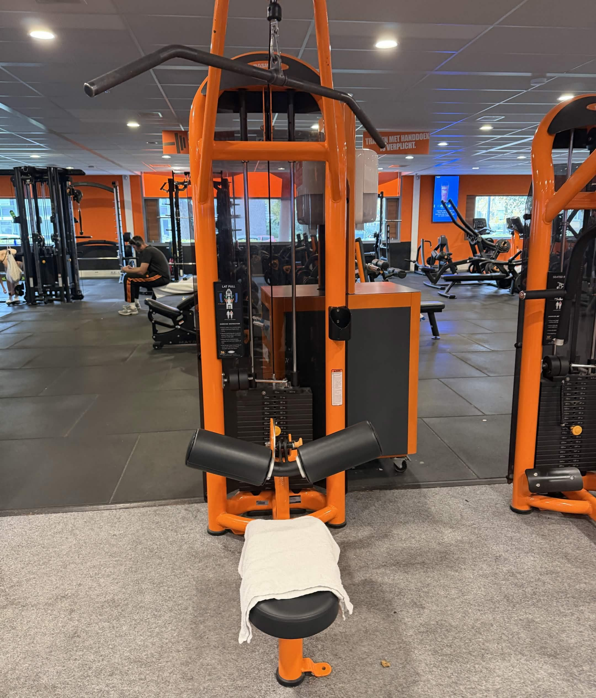
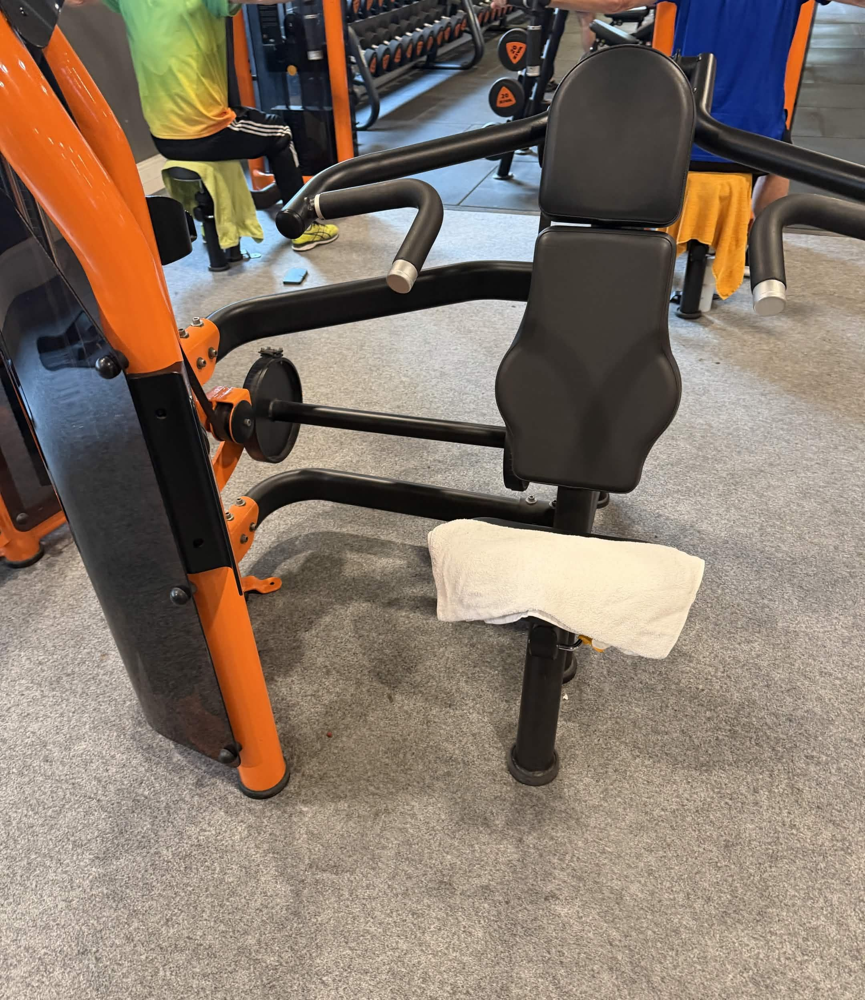
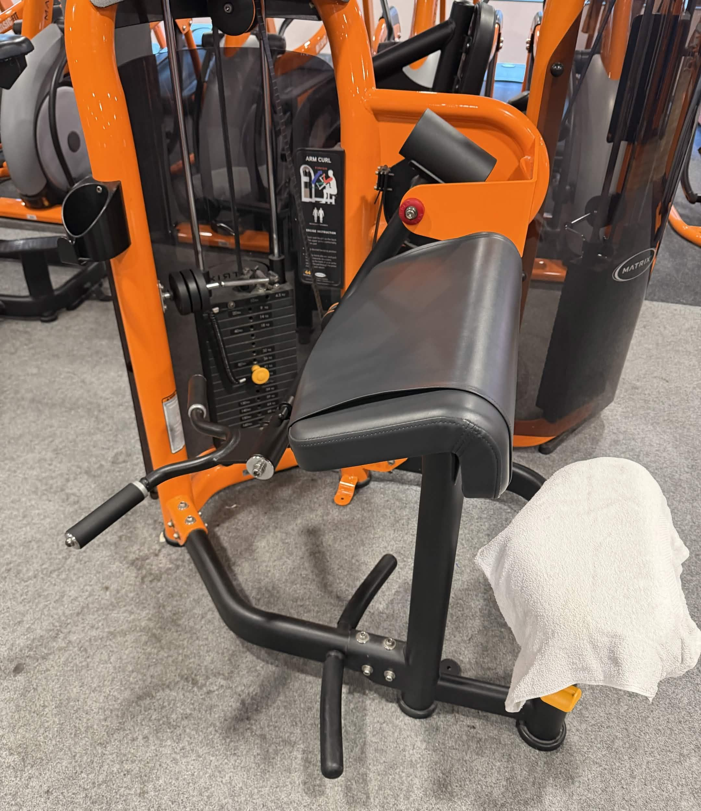

Chest press
Druk het gewicht naar voren en beweeg rustig terug.
2 sets · 8–12 herhalingen · 90 seconden rust
Deze workout is voor ouders die hun bovenlichaam willen trainen maar weinig tijd hebben. De oefeningen richten zich op borst, rug, schouders en armen.
Druk het gewicht naar voren en beweeg rustig terug.
2 sets · 8–12 herhalingen · 90 seconden rust

Trek de stang gecontroleerd naar je borst.
2 sets · 8–12 herhalingen · 90 seconden rust

Duw de handgrepen omhoog voor je schouders.
2 sets · 8–12 herhalingen · 90 seconden rust

Buig je armen rustig om je biceps te trainen.
2 sets · 8–12 herhalingen · 90 seconden rust
| Oefening | Sets | Herhalingen | Rust |
|---|---|---|---|
| Chest press | 2 | 8–12 | 90 sec. |
| Lat pulldown | 2 | 8–12 | 90 sec. |
| Shoulder press | 2 | 8–12 | 90 sec. |
| Bicep curls | 2 | 8–12 | 90 sec. |